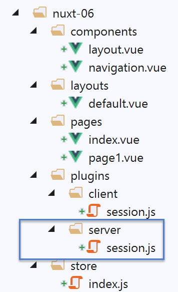
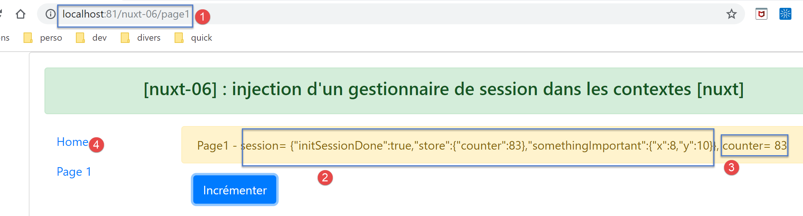

9. Esempio [nuxt-06]: iniezione nel contesto di un gestore di sessione
9.1. Présentation
L’esempio [nuxt-05] ha dimostrato che è possibile mantenere lo store anche quando l’utente forza le chiamate al server. Gli elementi dello store sono reattivi, in modo che, se integrati nelle viste, queste ultime reagiscano alle modifiche dello store. Si può anche voler mantenere gli elementi nel corso degli scambi client/server senza però volere che siano reattivi, semplicemente perché non vengono visualizzati dalle viste. È quindi possibile memorizzarli nella sessione senza che siano necessariamente presenti nello store.
Lo store è facilmente accessibile tramite proprietà come [context.app.$store] al di fuori delle viste o [this.$store] all’interno delle viste. Vorremmo qualcosa di analogo per la sessione, qualcosa come [context.app.$session] o [this.$session]. Vedremo che ciò è possibile grazie al concetto di iniezione. Tuttavia, non è possibile iniettare oggetti nel contesto, ma solo funzioni. Quest’ultima sarà quindi disponibile tramite le espressioni [context.app.$session()] o [this.$session()].
Infine, presenteremo il concetto [nuxt] di [plugin].
L’esempio [nuxt-06] si ottiene inizialmente copiando il progetto [nuxt-05]:

- in [1], aggiungeremo una cartella [plugins];
9.2. il concetto di plugin [nuxt]
[nuxt] definisce come [plugin] qualsiasi codice eseguito all’avvio dell’applicazione, prima ancora dell’esecuzione della funzione [nuxtServerInit] da parte del server, che fino ad ora era la prima funzione utente ad essere eseguita. I plugin dell’applicazione devono essere dichiarati nella chiave [plugins] del file di configurazione [nuxt.config.js]:
/*
** Plugins to load before mounting the App
*/
plugins: [
{ src: '~/plugins/client/session', mode: 'client' },
{ src: '~/plugins/server/session', mode: 'server' }
],
- righe 5-6: un plugin è identificato dal suo percorso [src] e dalla sua modalità di esecuzione [mode]. [mode] può assumere tre valori:
- [client]: il plugin deve essere eseguito esclusivamente sul lato client;
- [server]: il plugin deve essere eseguito esclusivamente sul lato server;
- assenza della chiave [mode]: in questo caso, il plugin deve essere eseguito sia sul lato client che sul lato server;
- righe 5-6: abbiamo collocato i nostri due plugin in una cartella denominata [plugins]. Non vi è alcun obbligo in tal senso. I plugin possono essere collocati in qualsiasi punto della struttura del progetto. Allo stesso modo, i nomi delle sottocartelle [client, server] sono qui arbitrari;

9.3. Il plugin [session] del server
Il plugin [server / session.js] è il seguente:
/* eslint-disable no-console */
export default (context, inject) => {
// gestione della sessione del server
// Esiste già una sessione?
let value = context.app.$cookies.get('session')
if (!value) {
// nuova sessione
console.log("[plugin session server], démarrage d'une nouvelle session")
value = initValue
} else {
// sessione esistente
console.log("[plugin session server], reprise d'une session existante")
}
// definizione della sessione
const session = {
// contenuto della sessione
value,
// salvataggio della sessione in un cookie
save(context) {
context.app.$cookies.set('session', this.value, { path: context.base, maxAge: context.env.maxAge })
}
}
// si inserisce una funzione in [context, Vue] che renderà la sessione corrente
inject('session', () => session)
}
// valore iniziale della sessione
const initValue = {
initSessionDone: false
}
- riga 2: i plugin vengono eseguiti ogni volta che c’è una richiesta al server: all’avvio e ogni volta che l’utente forza una richiesta al server digitando manualmente un URL:
- innanzitutto viene eseguito il plugin (o i plugin) del server;
- quando il browser client ha ricevuto la risposta dal server, è il turno del plugin (o dei plugin) del client di essere eseguito;
- riga 2: ogni plugin, sia client che server, riceve due parametri:
- [context]: il contesto del server o del client a seconda di chi esegue il plugin;
- [inject]: una funzione che consente di inserire una funzione nel contesto del server o del client;
- lo scopo del plugin [server / session] è duplice:
- definire una sessione (righe 16-23);
- definire all’interno del contesto una funzione [$session] che restituirà come risultato la sessione della riga 16. È la riga 25 a svolgere questa operazione;
- righe 16-23: la sessione incapsulerà i propri dati nell’oggetto [value] della riga 18;
- righe 20-22: dispone di una funzione [save] che riceve come parametro un oggetto [context]. È il codice chiamante a fornirle questo contesto. Con esso, la funzione [save] salva il valore della sessione, l’oggetto [value], nel cookie di sessione;
- riga 6: quando il plugin [server / session] viene eseguito, verifica innanzitutto se il server ha ricevuto un cookie di sessione;
- in caso affermativo, l’oggetto [value] della riga 6 rappresenta il valore della sessione, ovvero l’insieme dei dati in essa incapsulati;
- in caso contrario, alle righe 7-11, si imposta il valore iniziale della sessione. Questo sarà l’oggetto [initValue] delle righe 29-31. Gli elementi della sessione saranno definiti nella funzione [nuxtServerInit], che viene eseguita dopo il plugin del server;
- riga 18: la notazione [value] è una scorciatoia per la notazione [value:value]. Il [value] a sinistra è il nome di una chiave di oggetto, il [value] a destra è l’oggetto [value] dichiarato alla riga 6;
- riga 25: quando si arriva a questa riga, la sessione è stata creata perché non esisteva oppure è stata recuperata dalla richiesta HTTP del browser client;
- riga 25: si inserisce nel contesto del server una nuova funzione:
- il primo parametro di [inject] è il nome della funzione che si sta creando, in questo caso «session». [nuxt] le assegnerà infatti il nome «$session»;
- il secondo parametro è la definizione della funzione. In questo caso la funzione [$session]
- non accetterà alcun parametro;
- restituirà l’oggetto [session] della riga 16;
- una volta eseguito il plugin:
- la funzione [$session] è disponibile in [context.app.$session] dove è disponibile l’oggetto [context], oppure [this.$session] in una vista o nello store [vuex];
- la funzione [$session] restituisce un oggetto [session] con una chiave univoca [value];
- alla creazione iniziale della sessione, l’oggetto [value] ha una sola chiave [initStoreDone] (righe 29-31). La chiave [initStoreDone:false] serve a indicare che lo store non è ancora stato inserito nella sessione. Ciò verrà effettuato dalla funzione [nuxtServerInit];
9.4. Inizializzazione della sessione
Una volta che il plugin [session / server] è stato eseguito dal server, quest’ultimo eseguirà il seguente script [store / index.js]:
/* eslint-disable no-console */
export const state = () => ({
// contatore
counter: 0
})
export const mutations = {
// incremento del contatore di un valore [inc]
increment(state, inc) {
state.counter += inc
},
// sostituzione dello stato
replace(state, newState) {
for (const attr in newState) {
state[attr] = newState[attr]
}
}
}
export const actions = {
async nuxtServerInit(store, context) {
// chi esegue questo codice?
console.log('nuxtServerInit, client=', process.client, 'serveur=', process.server, 'env=', context.env)
// si attende la conclusione di una promessa
await new Promise(function(resolve, reject) {
// normalmente qui c'è una funzione asincrona
// la simuliamo con un'attesa di un secondo
setTimeout(() => {
// inizializzazione della sessione
initSession(store, context)
// Operazione riuscita
resolve()
}, 1000)
})
}
}
function initSession(store, context) {
// store è lo store da inizializzare
// si recupera la sessione
const session = context.app.$session()
// La sessione è già stata inizializzata?
if (!session.value.initSessionDone) {
// si avvia un nuovo store
console.log("nuxtServerInit, initialisation d'une nouvelle session")
// si inizializza lo store
store.commit('increment', 77)
// si inserisce lo store nella sessione
session.value.store = store.state
// Si sta inizializzando una nuova sessione
session.value.somethingImportant = { x: 2, y: 4 }
// la sessione è ora inizializzata
session.value.initSessionDone = true
} else {
console.log("nuxtServerInit, reprise d'un store existant")
// si aggiorna lo store con lo store della sessione
store.commit('replace', session.value.store)
}
// si salva la sessione
session.save(context)
// log
console.log('initSession terminé, store=', store.state, 'session=', session.value)
}
Rispetto allo store del progetto [nuxt-05], cambia solo la funzione [initSession] (precedentemente initStore) nelle righe 38-60:
- riga 42: si recupera la sessione tramite la funzione [$session] che è stata inserita nel contesto del server;
- riga 44: si verifica se la sessione è già stata inizializzata;
- righe 45-54: se non è così:
- riga 48: lo store viene inizializzato;
- riga 50: lo stato dello store viene inserito nella sessione;
- riga 52: si aggiunge un altro oggetto [somethingImportant] alla sessione. Questo non farà parte dello store;
- riga 54: si registra il fatto che la sessione è ora inizializzata;
- righe 55-59: se la sessione era già stata inizializzata:
- riga 58: il nuovo store viene inizializzato con il contenuto della sessione;
- riga 61: la sessione viene salvata nel cookie di sessione. Si ricorda che ciò consiste nell’inserire il cookie nella risposta HTTP che il server invierà al browser client;
9.5. Il plugin [client / session] del client
Una volta che il server ha eseguito gli script [plugins / server / session] e [store / index], invierà una delle pagine [index, page1] al browser client. Nella risposta HTTP del server sarà presente il cookie di sessione. Una volta che la pagina sarà stata ricevuta dal browser del client, verranno eseguiti gli script client incorporati nella pagina. A quel punto verrà eseguito il plugin [client / session]:
/* eslint-disable no-console */
export default (context, inject) => {
// gestione della sessione del cliente
// la sessione esiste necessariamente, inizializzata dal server
console.log('[plugin session client], reprise de la session du serveur')
// definizione della sessione
const session = {
// contenuto della sessione
value: context.app.$cookies.get('session'),
// salvataggio della sessione in un cookie
save(context) {
context.app.$cookies.set('session', this.value, { path: context.base, maxAge: context.env.maxAge })
}
}
// si inserisce una funzione in [context, Vue] che renderà attiva la sessione corrente
inject('session', () => session)
}
- quando il plugin client viene eseguito, il cookie di sessione è già stato ricevuto dal browser client;
- l’obiettivo del plugin [client] è quello di iniettare a sua volta una funzione [$session] nel contesto del client. Questa funzione restituirebbe la sessione inviata dal server;
- riga 19: la funzione iniettata [$session] restituirà la sessione delle righe 9-16;
- righe 9-16: l’oggetto [session] gestito dal client. Si tratterà di una copia della sessione inviata dal server;
- riga 11: il valore della sessione del client viene prelevato dal cookie di sessione inviato dal server [nuxt];
- righe 13-15: come per la sessione del server, la sessione del cliente dispone di una funzione [save] che consente di salvare il valore della sessione, [this.value] (riga 14), nel cookie di sessione memorizzato sul browser;
9.6. La pagina [index]
La pagina [index] si evolve come segue:
<!-- pagina [index] -->
<template>
<Layout :left="true" :right="true">
<!-- navigazione -->
<Navigation slot="left" />
<!-- messaggio-->
<template slot="right">
<b-alert show variant="warning"> Home - session= {{ jsonSession }}, counter= {{ $store.state.counter }} </b-alert>
<!-- pulsante -->
<b-button @click="incrementCounter" class="ml-3" variant="primary">Incrémenter</b-button>
</template>
</Layout>
</template>
<script>
/* eslint-disable no-undef */
/* eslint-disable no-console */
/* eslint-disable nuxt/no-env-in-hooks */
import Layout from '@/components/layout'
import Navigation from '@/components/navigation'
export default {
name: 'Home',
// componenti utilizzati
components: {
Layout,
Navigation
},
computed: {
jsonSession() {
return JSON.stringify(this.$session().value)
}
},
// ciclo di vita
beforeCreate() {
// client e server
console.log('[home beforeCreate]')
},
created() {
// client e server
console.log('[home created], session=', this.$session().value)
},
beforeMount() {
// solo client
console.log('[home beforeMount]')
},
mounted() {
// solo client
console.log('[home mounted]')
},
// gestione degli eventi
methods: {
incrementCounter() {
console.log('incrementCounter')
// incremento del contatore di 1
this.$store.commit('increment', 1)
// modifica della sessione
const session = this.$session()
session.value.store = this.$store.state
session.value.somethingImportant.x++
session.value.somethingImportant.y++
// salvataggio della sessione nel cookie di sessione
session.save(this.$nuxt.context)
}
}
}
</script>
È importante ricordare che questa pagina viene eseguita sia sul lato server che sul lato client.
- riga 8: ora vengono visualizzati sia la sessione che lo store;
- riga 30: [jsonSession] è una proprietà calcolata che restituisce la stringa jSON come valore della sessione;
- riga 41: si visualizza il valore della sessione utilizzando la funzione iniettata [this.$session]. Questa esiste sia nel contesto del server che in quello del client;
- riga 53: il metodo [incrementCounter] viene eseguito solo sul lato client;
- riga 56: il contatore dello store viene incrementato e visualizzato come in precedenza;
- riga 58: si recupera la sessione tramite la funzione iniettata [this.$session];
- riga 59: lo store della sessione viene aggiornato;
- righe 60-61: si incrementano gli attributi [somethingImportant.x, somethingImportant.y] della sessione. Questo solo per dimostrare che una sessione può servire a trasportare qualcosa di diverso dallo store;
- riga 63: la sessione viene salvata nel cookie di sessione memorizzato sul browser. In una vista client, il contesto di quest’ultimo è disponibile in [this.$nuxt.context];
Lo scopo della pagina [index] è dimostrare che la sessione non è reattiva, mentre lo store lo è. Quando si incrementano gli elementi della sessione, si noterà che la vista non viene aggiornata. La vista [page1] presenta una soluzione a questo problema.
9.7. La pagina [page1]
La pagina [page1] è stata ottenuta copiando la pagina [index] e modificandola leggermente:
<!-- pagina [index] -->
<template>
<Layout :left="true" :right="true">
<!-- navigazione -->
<Navigation slot="left" />
<!-- messaggio-->
<template slot="right">
<b-alert show variant="warning"> Page1 - session= {{ jsonSession }}, counter= {{ $store.state.counter }} </b-alert>
<!-- pulsante -->
<b-button @click="incrementCounter" class="ml-3" variant="primary">Incrémenter</b-button>
</template>
</Layout>
</template>
<script>
/* eslint-disable no-undef */
/* eslint-disable no-console */
/* eslint-disable nuxt/no-env-in-hooks */
import Layout from '@/components/layout'
import Navigation from '@/components/navigation'
export default {
name: 'Page1',
// componenti utilizzati
components: {
Layout,
Navigation
},
data() {
return {
session: {}
}
},
computed: {
jsonSession() {
return JSON.stringify(this.session.value)
}
},
// ciclo di vita
beforeCreate() {
// client e server
console.log('[page1 beforeCreate]')
},
created() {
// client e server
// si inserisce la sessione nelle proprietà reattive della pagina
this.session = this.$session()
// log
console.log('[page1 created], session=', this.session.value)
},
beforeMount() {
// solo client
console.log('[page1 beforeMount]')
},
mounted() {
// solo client
console.log('[page1 mounted]')
},
// gestione degli eventi
methods: {
incrementCounter() {
console.log('incrementCounter')
// incremento del contatore di 1
this.$store.commit('increment', 1)
// modifica della sessione
this.session.value.store = this.$store.state
this.session.value.somethingImportant.x++
this.session.value.somethingImportant.y++
// salvataggio della sessione nel cookie di sessione
this.session.save(this.$nuxt.context)
}
}
}
</script>
- riga 47: la differenza principale sta nel fatto che si inserisce la sessione corrente nelle proprietà della pagina (righe 29-33). Ciò avrà come effetto che d'ora in poi la sessione diventerà reattiva. Quando la funzione [incrementCounter] incrementerà gli elementi della sessione, la vista [page1] verrà aggiornata;
9.8. Esecuzione del progetto
Prima di eseguire il progetto, controllate il cookie di sessione del vostro browser e, se presente, eliminatelo affinché il server crei una nuova sessione:

Ora richiediamo URL e [http://localhost:81/nuxt-06/]:

I log nel browser sono quindi i seguenti:

- in [2], il server avvia una nuova sessione nel plugin [session] del server;
- in [3], questa nuova sessione viene inizializzata in [nuxtServerInit];
- in [4], la nuova sessione così come è nota sul server;
- in [5], il client ha recuperato correttamente questa sessione;
Ora incrementiamo il contatore tre volte:

- in [3], il contatore è stato correttamente incrementato ma non la sessione in [2]. Mentre [3] mostra lo store che è reattivo, [2] mostra la sessione che invece non è reattiva:
Ora ricarichiamo la pagina (F5). I log risultanti da questa ricarica sono i seguenti:

- in [2], si vede che il server ha ricevuto un cookie di sessione inviato dal browser client;
- in [4], si vede che lo store non viene reinizializzato ma ripreso dalla sessione ricevuta;
- in [4-5]: si vede che tutti gli attributi della sessione sono stati effettivamente incrementati tre volte;
La pagina inviata dal server è quindi la seguente;

La conclusione che si ricava da questa pagina è che la sessione può trasportare altri elementi oltre allo store, ma questi non sono reattivi.
Ora clicchiamo sul link [Page 1] [4]. La nuova pagina visualizzata è quindi la seguente:

Quindi utilizziamo il pulsante [Incrémenter] tre volte. La pagina diventa la seguente:

Questa volta la sessione viene visualizzata correttamente come [2]. In questo caso è reattiva. Lo si può vedere nei log:

- in [1-3], i valori della sessione;
- in [4-6], i getter e i setter reattivi degli elementi della sessione;
Ora clicchiamo sul link [Home] [4]. Otteniamo la seguente pagina:

Quindi facciamo doppio clic sul pulsante [Incrémenter] [4]. La pagina diventa la seguente:

Notiamo che anche in questo caso la sessione è diventata reattiva: [2].
Richiediamo il valore restituito dalla funzione [this.$session()]:

- nella scheda [Vue], selezioniamo la pagina corrente [Home] per ottenerne il riferimento [$vm0] [3];
Quindi, nella scheda [Console] [4], si richiede il valore della funzione [$vm0.$session()]:

- in [5], si nota che la sessione è diventata attiva mentre inizialmente non lo era;
- in [6], si richiede di visualizzare il valore della sessione;
- in [7-8], si scopre che anche questo valore è diventato reattivo;
Si ottiene quindi un risultato inaspettato: se un elemento diventa reattivo in una pagina perché è stato inserito nelle proprietà della pagina, allora diventa reattivo anche nelle pagine in cui non fa parte delle proprietà.
9.9. Conclusion
L’esempio [nuxt-05] ha dimostrato che è possibile mantenere lo store nel corso delle richieste effettuate al server. L’esempio [nuxt-06] fa la stessa cosa con un oggetto che abbiamo chiamato [session] per analogia con la sessione web. Abbiamo visto che questa sessione poteva avere le stesse proprietà dello store [Vuex] e diventare a sua volta reattiva, sebbene in origine non lo fosse.
Allora, qual è l’utilità dello store [Vuex]? Devo ammettere che per il momento non mi è ancora chiara. È probabile che mi sia sfuggito qualcosa. Quindi, nel dubbio, consiglierei di utilizzare:
- uno store [Vuex] per inserirvi tutto ciò che deve essere condiviso tra le pagine del client e, eventualmente, tra il client e il server;
- un cookie di sessione se lo store deve essere mantenuto durante una richiesta dal client al server, con la sessione che contiene quindi solo lo store;
Gli esempi [nuxt-05] e [nuxt-06] avevano lo scopo di mostrare come garantire la continuità dell’applicazione quando l’utente forza la chiamata al server digitando manualmente URL. Si ricorda che il comportamento predefinito in questo caso è il riavvio dell’applicazione, con conseguente perdita dello stato corrente.